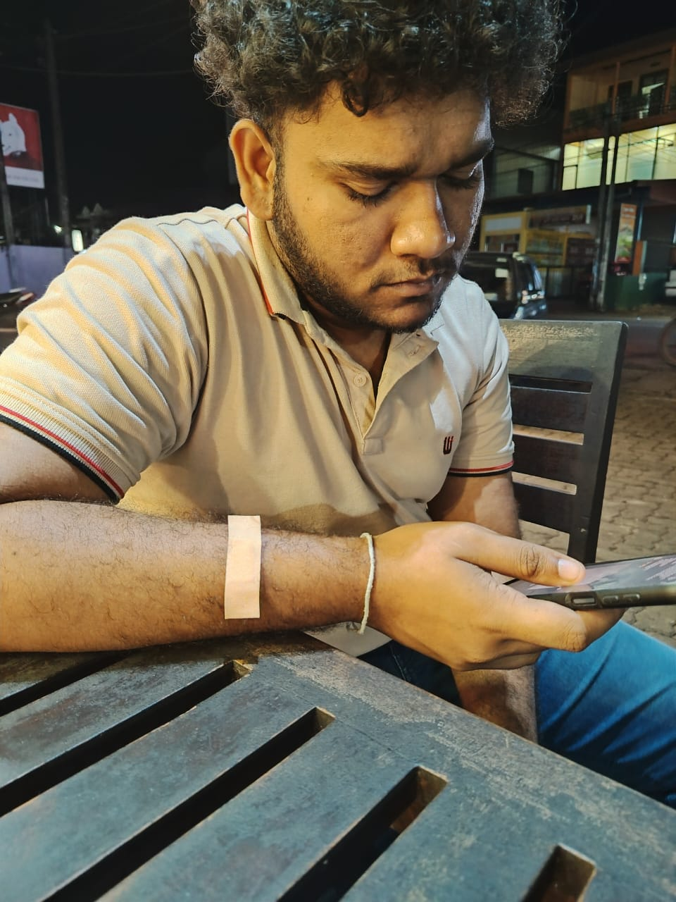

A dedicated software developer and creative strategist focused on delivering high-impact digital solutions through technical excellence and innovative design.

Software Developer & Content Strategist
With a strong analytical foundation in Physical Science and a passion for modern web technologies, I specialize in building responsive, user-centric applications. My journey began with a deep interest in problem-solving and has evolved into a professional pursuit of technical excellence.
Beyond development, my experience as a Technical Head and Content Creator has equipped me with unique leadership and communication skills, allowing me to bridge the gap between complex technical requirements and creative business goals.
Degree Pending
Focusing on Pure Mathematics, Physics, and Applied Sciences while developing expertise in software systems.
Physical Science Stream
Achieved excellence in Combined Mathematics, Physics, and Chemistry.
Peoples backers (Blue Lotus POS Cloud System)
Responsible for administrative backend operations and system management for the POS Cloud infrastructure.
Media Unit, Ananda Sastralaya
Oversaw technical infrastructure and digital media operations for major institutional events and broadcasts.
Freelance / Independent
Developing and managing high-quality digital content and live streaming solutions for a diverse online audience.
Personal pursuits that contribute to my creative and analytical mindset.
Developing analytical thinking and complex problem-solving skills.
Capturing perspectives through photography and digital media.
Exploring patterns and creativity through various musical genres.
Broadening perspectives by exploring diverse landscapes and traditions.